Префектура Нагано · Хакуба · еда и отдых
Snow Peak FIELD SUITE в Хакубе: глэмпинг и итальянский ужин на высоте 1200 метров
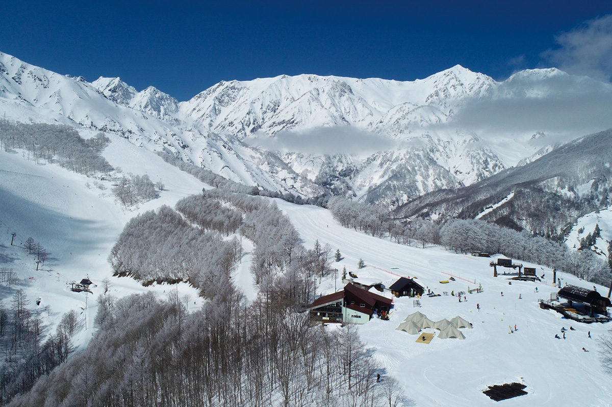
Чтобы попасть на ужин, сначала нужно сесть на кресельную канатку. На плато Китаонэ, на склоне Хаппо-онэ в Хакубе, производитель туристического снаряжения Snow Peak устроил глэмпинг, где вечером подают итальянские блюда из продуктов Нагано и местное вино.
Место
Палатки на плато Китаонэ
Кресло мерно покачивается и плавно ползёт вверх. Путь лежит на середину склона Хаппо-онэ, на плато Китаонэ: там, говорят, есть необычный ресторан. Сначала от канатки немного не по себе, но скоро прогулка по воздуху начинает радовать. Минут через десять подъёмник довозит до верхней станции на высоте 1200 м, где гостей встречают сотрудники Snow Peak FIELD SUITE HAKUBA KITAONE KOGEN.
Здания отеля здесь не найти. Гости живут в палатках и в одном мобильном домике, который превращён в отдельный номер. Курорт создала компания Snow Peak, популярный в Японии производитель снаряжения для кемпинга. Она много лет предлагает свой взгляд на жизнь на природе. Открылся он в июле 2019 года. Слово «глэмпинг» сложено из «гламурного» и «кемпинга»: удобство курортного отеля и при этом природа совсем рядом.
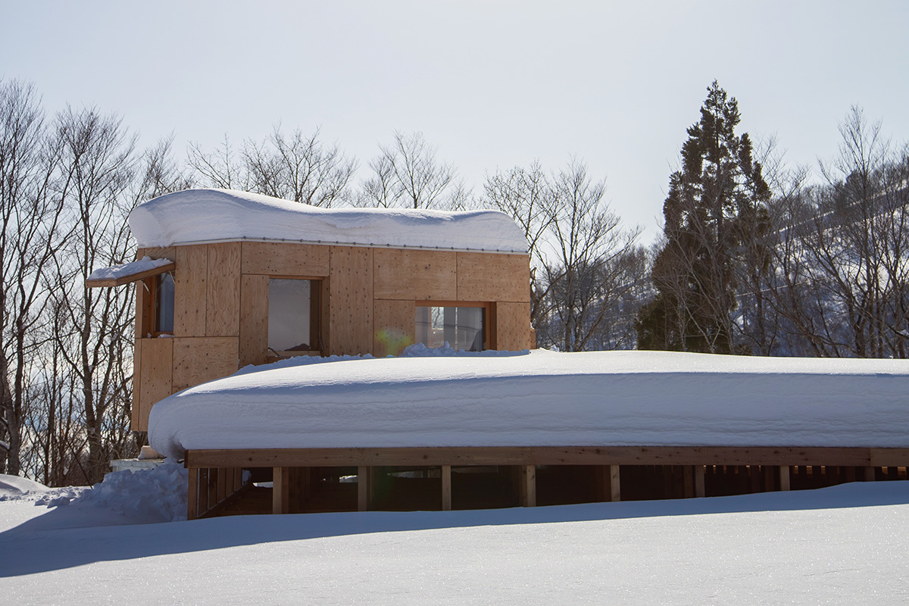
Все знают, как хорошо на природе, но поставить палатку самому непросто: нужно снаряжение, нужна машина. На глэмпинг можно приехать налегке. Таких мест в Японии много, но ужин в них обычно сводится к барбекю: продукты дают, а готовят гости сами. В FIELD SUITE шеф сам закупает местные продукты и собирает из них дегустационный ужин, а к каждому блюду подбирает редкое вино Нагано. Тем, кто не пьёт, предложат безалкогольные напитки. Ресторанный критик, побывавший здесь, убедился: такая кухня на вершине горы доказывает, что японская гастрономия уже не уступает европейской и американской.
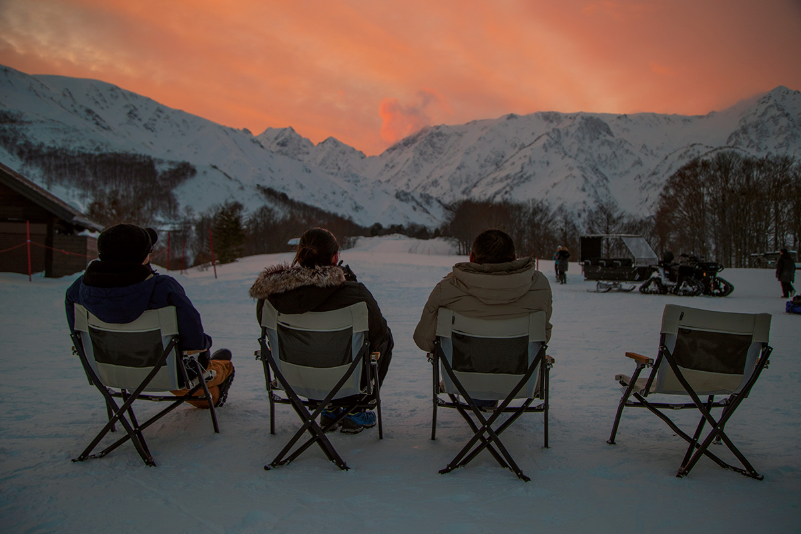
Вокруг стоит полная тишина, и с каждым глубоким вдохом в тело входит чистый горный воздух. Вечер начинается с приветственного бокала у костра, и к сумеркам гости уже совсем расслаблены. Ужин подают в ресторане внутри дома с террасой. Зимой 2020/21 года проживание в домике Jyubako стоило от 150 000 иен без налога за ночь, с трёхразовым питанием, напитками и трансфером от станции Нагано. Сумма немалая, поэтому для ужина придумали отдельный тур без ночёвки, и многие, кто побывал на нём зимой 2019/20 года, вернулись снова.
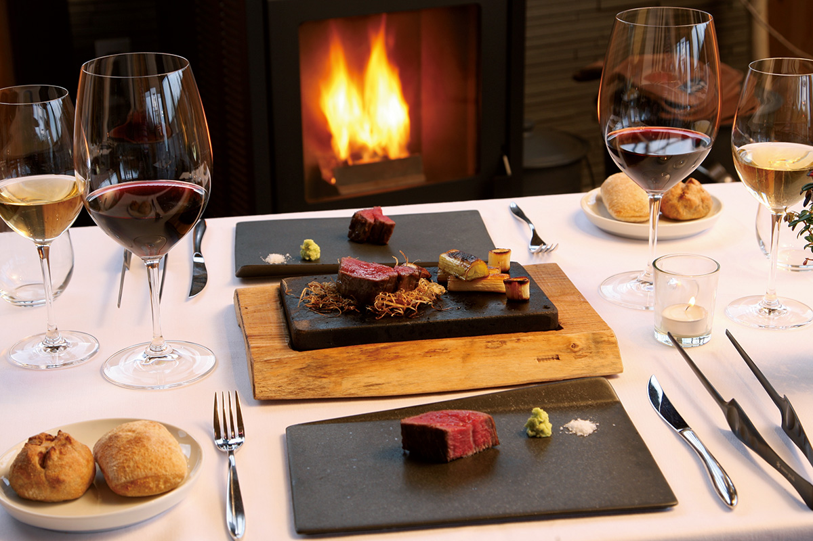
Ужин
Après & Dining: четыре часа от аперитива до костра
Тур Après & Dining длится около четырёх часов: аперитив, ужин из нескольких блюд с напитками и десерт у костра. Почти все продукты сезонные и выращены в Нагано. Овощи, собранные утром, привозят уже днём, и они такие свежие, что удивляют даже шефа.
«Хорошие свежие овощи вкусны и без всякой обработки»
шеф Синго Судзуки
Меню иногда меняется в зависимости от дня, но оно такое же, как у гостей, которые живут на плато. В каждой тарелке продумана подача, и почти в каждой спрятан сюрприз. Кухня современная итальянская, и трудно поверить, что ешь её на высоте 1200 м. Вино к каждому блюду тоже только из Нагано. В 2021 году тур стоил от 30 000 иен без налога с человека, включая трансфер от гостиницы в Хакубе, канатку, ужин, вино и напитки.
Меню
Восемь блюд зимнего ужина 2021 года
Хурма, ветчина и жареные ньокки с рикоттой
Обе закуски сделаны с ветчиной и салями Maison du Jambon de Himeki. Сладкая вяленая хурма «итида-гаки» и мягкая солёность ветчины друг друга не подводят. Ньокко фритто здесь это жареные ньокки с начинкой из рикотты, которую делают из молока «Мацуда» в городе Омати. Пышное тесто и свежая рикотта запоминаются надолго. К ним подают салями из чёрной свинины Омати.
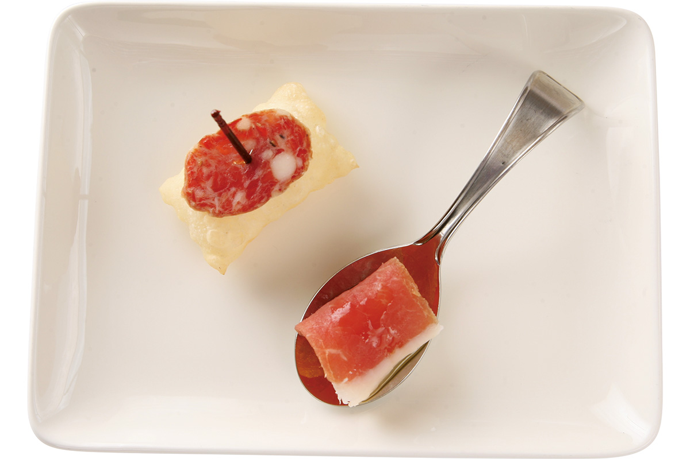
Венок из зимних овощей
На закуску зимние овощи Нагано выкладывают венком, а в центр наливают соус из горгонзолы. Среди ярких лепестков и овощей попадается хрустящая жареная гречка. Вкус зависит от продуктов дня и, строго говоря, меняется с каждым кусочком. В 2020 году это блюдо хвалили больше всех.
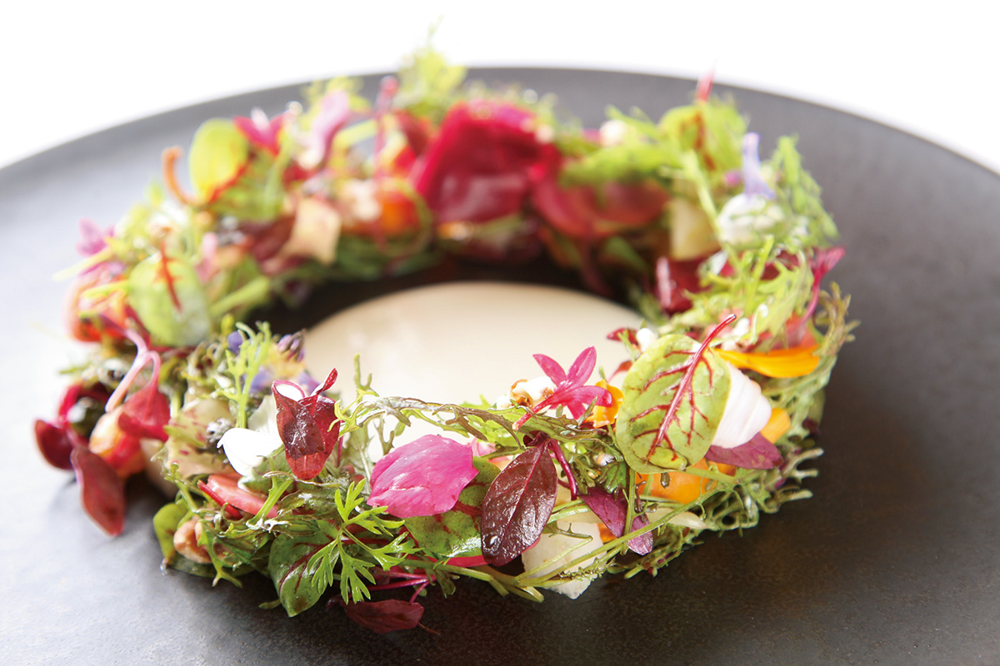
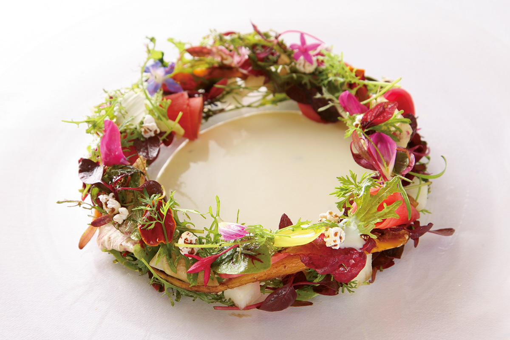
Лосось и гольц под дымом
К столу торжественно несут блюда под стеклянными колпаками, полными дыма. Когда тарелки стоят перед всеми гостями, колпаки снимают одновременно, и по залу расходится ароматный дым. Он рассеивается, и под ним открывается блюдо: лосось Синсю от хозяйства «Годзу» и тартар из гольца ивана, мелко порубленного сырого филе. Жёлтая икра на нём тоже икра ивана.
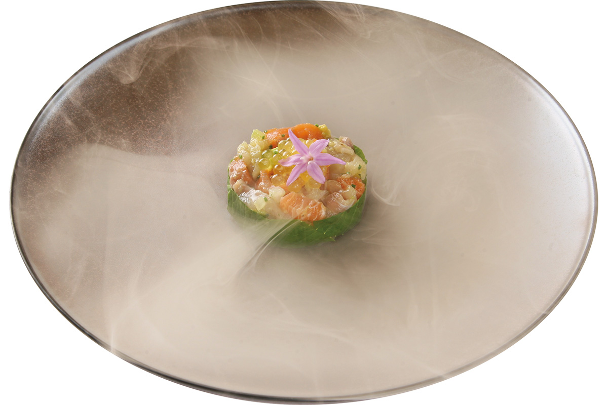
Спагетти с нодзаваной
Спагетти алио-олио это простая паста с чесноком и острым перцем. Шеф добавил в неё нодзавану, листовую зелень, характерную для Нагано. На юге Италии, в Неаполе, похожую листовую зелень из семейства капустных, фриарьелли, заготавливают в масле и кладут во что угодно, от гарнира к мясу до супа. Нодзавану тоже когда-то заготавливали в каждом доме по своему рецепту. Кухни разных стран часто похожи.
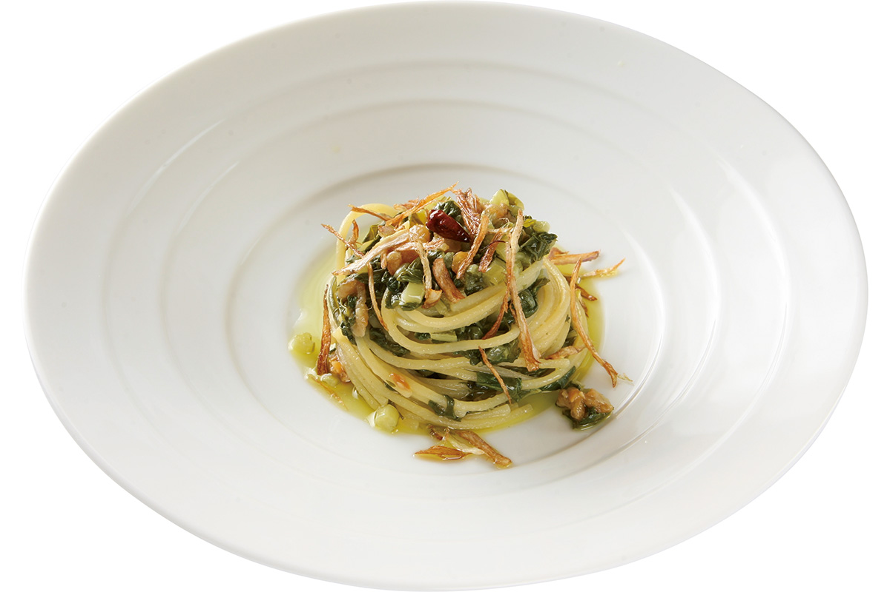
Равиоли с рагу из кабана
Небольшие равиоли посыпают пекорино, сыром из овечьего молока, который называют древнейшим сыром Италии. Пекорино романо, пекорино тоскано и другие отличаются солёностью в зависимости от места, а блюду лучше всего подходит сыр из той же местности. Под равиоли лежит рагу из дикого кабана Синсю, классика тосканской кухни, поэтому и сыр здесь тосканский. Рядом запечённый и жареный топинамбур.
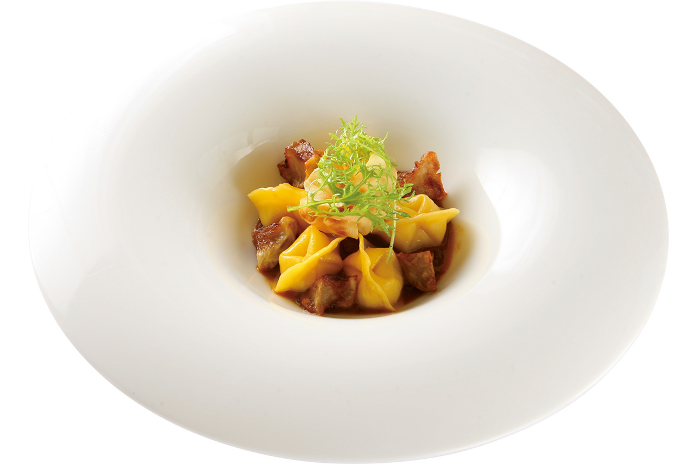
Гимов
Перед мясом подают гимов, воздушный французский зефир, чтобы освежить вкус. В него добавлены розовый и зелёный имбирь и пальчиковый лайм, который ещё называют фруктовой икрой: он даёт кислинку и лопающиеся на зубах шарики. Все необычные травы и фрукты тоже из Нагано. Тающий во рту гимов делают без желатина, замораживая сироп с сахаром, и это кропотливая работа.
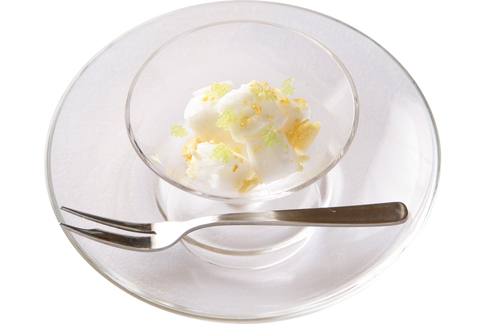
Говядина Синсю с солью и васаби
Главное блюдо, филе говядины Синсю, жарят на дровах до последней минуты, чтобы подать его в лучшем виде. На стол приносят горячую каменную плиту с куском мяса на двоих и нарезают его при гостях. Дальше каждый ест по вкусу, с солью или васаби из Адзумино. Рядом лук «мацумото иппон-нэги», традиционный овощ Нагано: снаружи он пропитан ароматом жарки, а внутри нежный и сладкий, будто приготовлен на пару. Это вкус зимы.
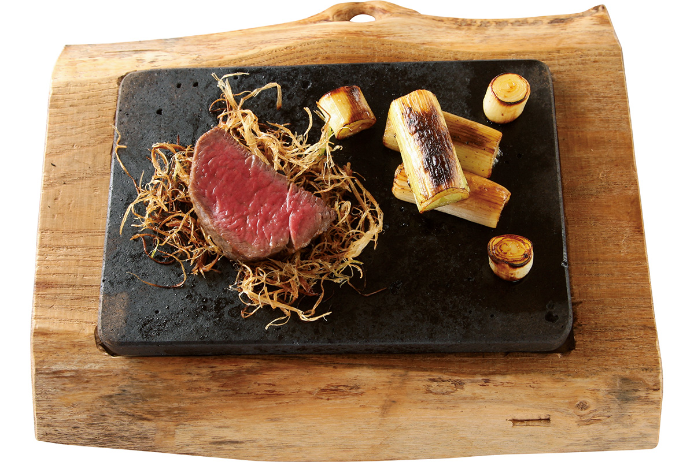
Тарт татен из яблок Омати
После главного блюда гости переходят к костру, где приятно холодит воздух, и там едят десерт. Зимний фрукт это яблоко. Для тарта берут сорт «когёку», кислый и с плотной мякотью. Домашнее слоёное тесто, яблоки, протомлённые в сливочном масле: тарт выходит щедрым. В середине к нему добавляют бальзамический уксус и мороженое из молока «Мацуда», и вкус меняется.
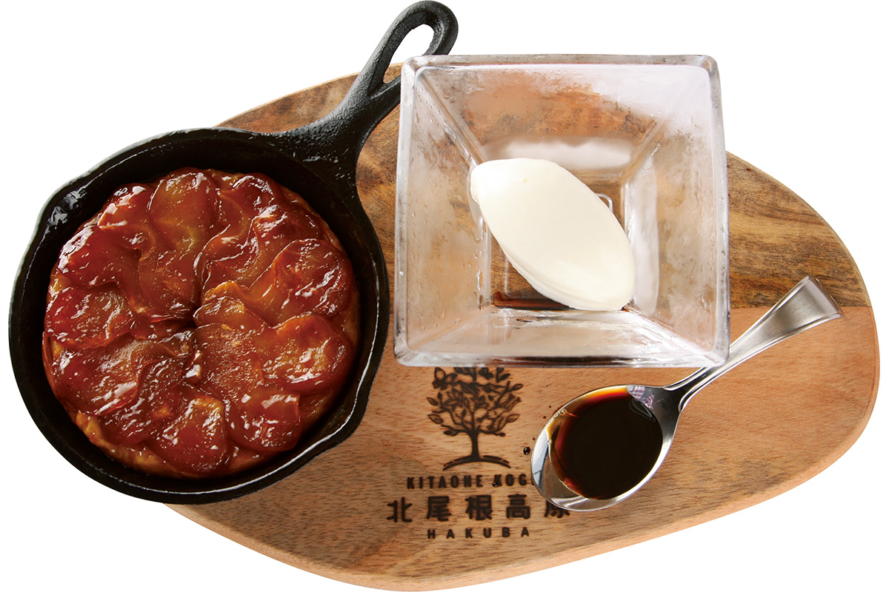
Вино
Только вина Нагано
Пары к блюдам подбирает сомелье, который около 2017 года открыл винный магазин в одной из деревень Нагано. Он советует обратить внимание на винодельню Cantina Riezo в деревне Такаяма, которая делает вино в основном из итальянских сортов винограда.
«Многих из этих вин не найти даже здесь, в Нагано. Обязательно попробуйте их к ужину»
сомелье
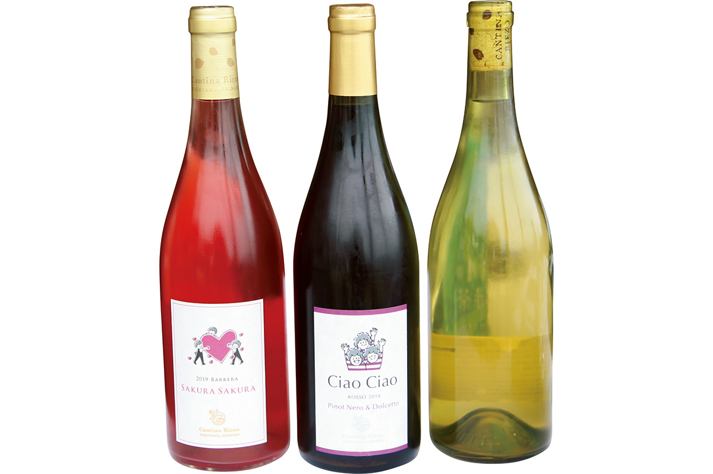
Продукты
Кому доверяет шеф
Maison du Jambon de Himeki: ветчина на кодзи
«Я удивился, что в Японии кто-то делает такую вкусную сыровяленую ветчину»
шеф Синго Судзуки
Мастерскую основал бывший повар французской кухни. Он нашёл место на высоте 1500 м в посёлке Нагава, подходящее для вяления окороков, и делает сыровяленую ветчину из свинины Нагано. Главная особенность в том, что для ферментации он использует кодзи, плесневый грибок для соевого соуса. Ветчина получается не слишком солёной и тонкой по вкусу.
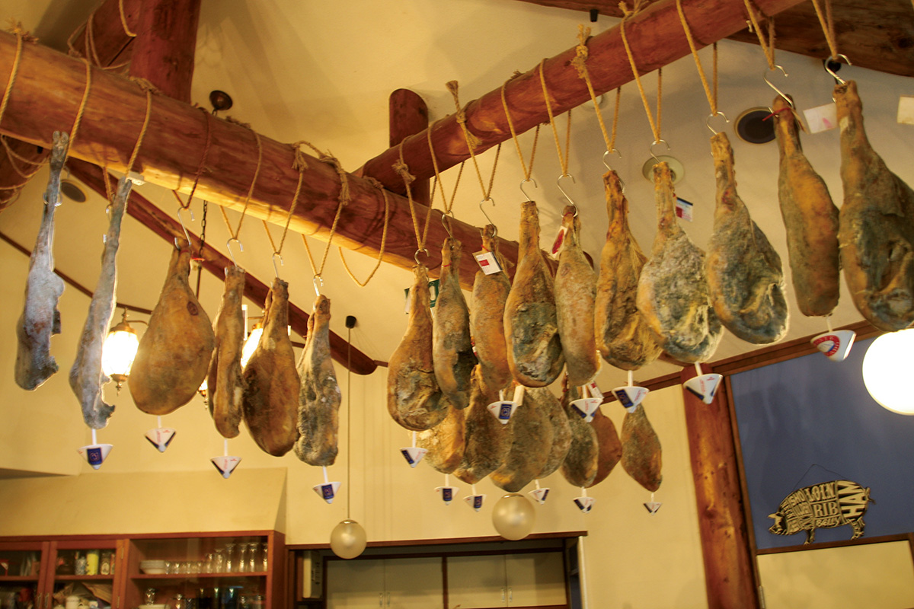
«Годзу»: рыба на талой воде
Лосось Синсю и гольца ивана шеф берёт у хозяйства «Годзу» в Хакубе.
«Рыба вкусная круглый год, на неё всегда можно положиться»
шеф Синго Судзуки
Лосось Синсю это собственная порода Нагано, помесь радужной и кумжи. Мясо у него нежнее, чем у радужной форели, а вкус богаче. Рыбу растят в чистой речной воде, которая берёт начало в родниках у подножия гор Хакубы, и у неё в меру жира и плотное мясо.
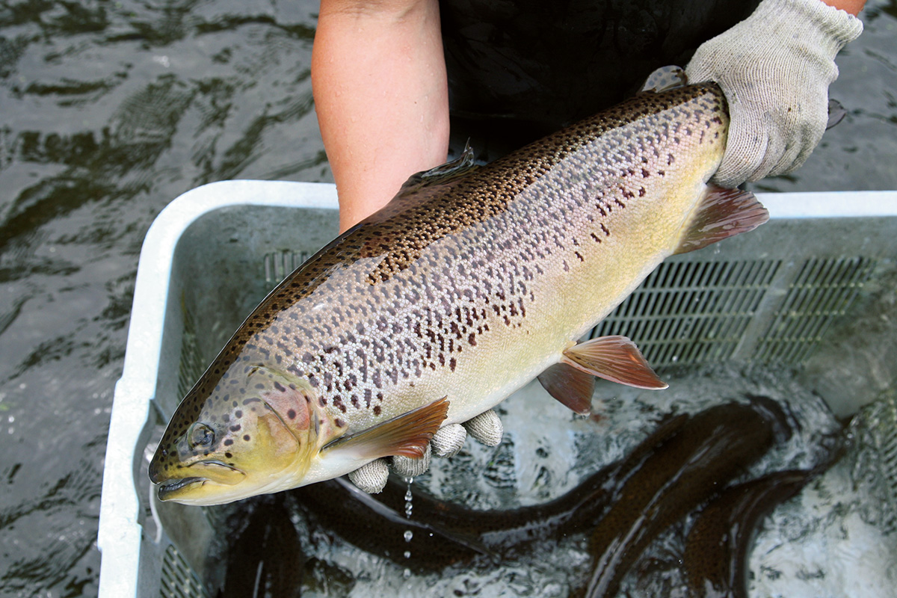
Snow Peak FIELD SUITE HAKUBA KITAONE KOGEN
- Адрес
- префектура Нагано, уезд Китаадзуми, Хакуба, Хокудзё, 4487-4, плато Китаонэ на склоне Хаппо-онэ
- Телефон
- +81 90-2524-4555
- Даты
- с конца декабря 2020 до конца марта 2021 года (зимний ужин Après & Dining)
- Цены / Вход
- ужин от 30 000 иен без налога, с трансфером от гостиницы в Хакубе; проживание с трёхразовым питанием от 150 000 иен без налога за ночь, с напитками и активностями
Фото: Мунэаки Маэда.